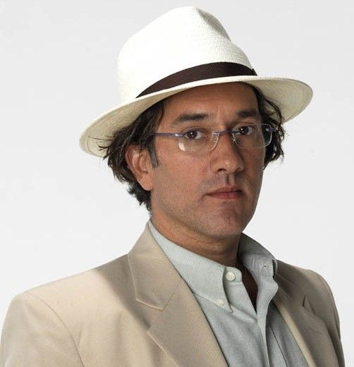
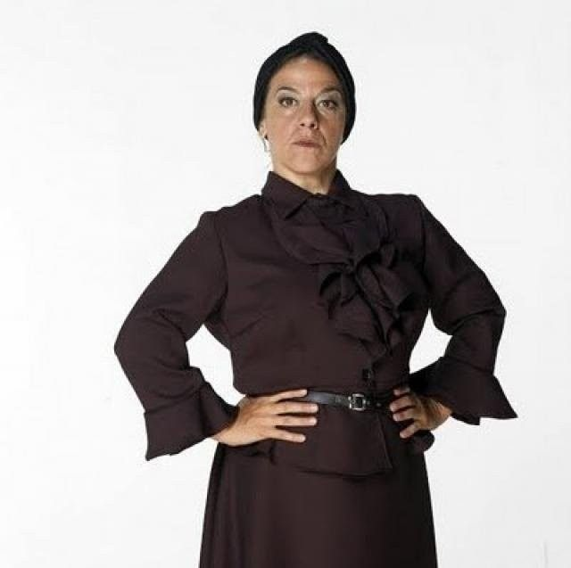
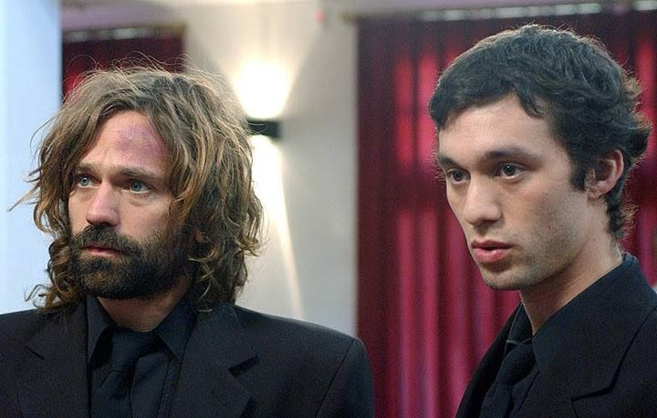
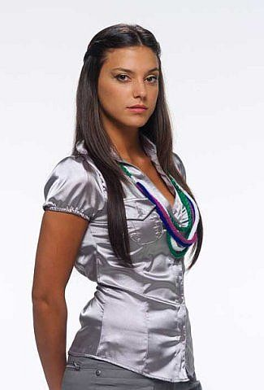
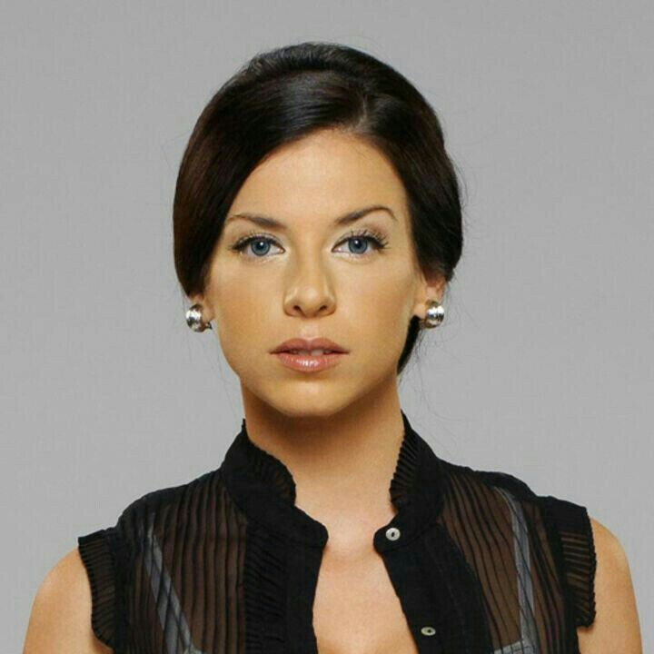
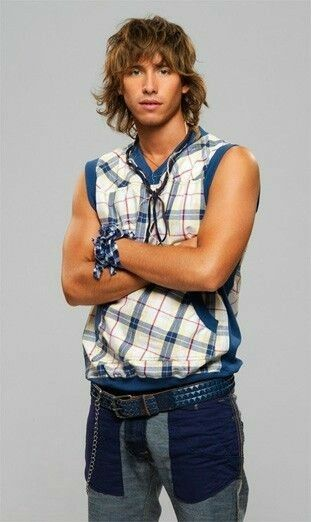

Villanos

Bartolomé
Bartolomé Bedoya Agüero es uno de los principales antagonistas de la primera temporada. Dirige la Fundación BB y utiliza a los chicos para su propio beneficio. Además, es el padre de Thiago.

Justina
Justina Merarda García trabaja junto a Bartolomé y participa del maltrato y explotación de los chicos. Es un personaje importante durante las primeras etapas de la historia y su rol cambia con el paso del tiempo.

Juan Cruz
Juan Cruz es uno de los grandes antagonistas de la serie. Está relacionado con Eudamón y busca utilizar su poder para cumplir sus propios objetivos. Se convierte en una amenaza central para los protagonistas.

Franka
Franka Mayerhold forma parte de la Corporación Cruz. Trabaja para Juan Cruz y se infiltra entre los protagonistas con el objetivo de manipularlos y acercarse a los secretos relacionados con Eudamón.

Luz
Luz Inchausti adquiere un papel antagonista en la etapa final de la serie. Está vinculada al sistema de control que domina la sociedad y se enfrenta a quienes forman parte de la Resistencia.

Víctor Vörg
Víctor Vörg es un personaje relacionado con las fuerzas que buscan controlar y manipular a los protagonistas. Su presencia forma parte de los conflictos que atraviesan los jóvenes durante la historia.